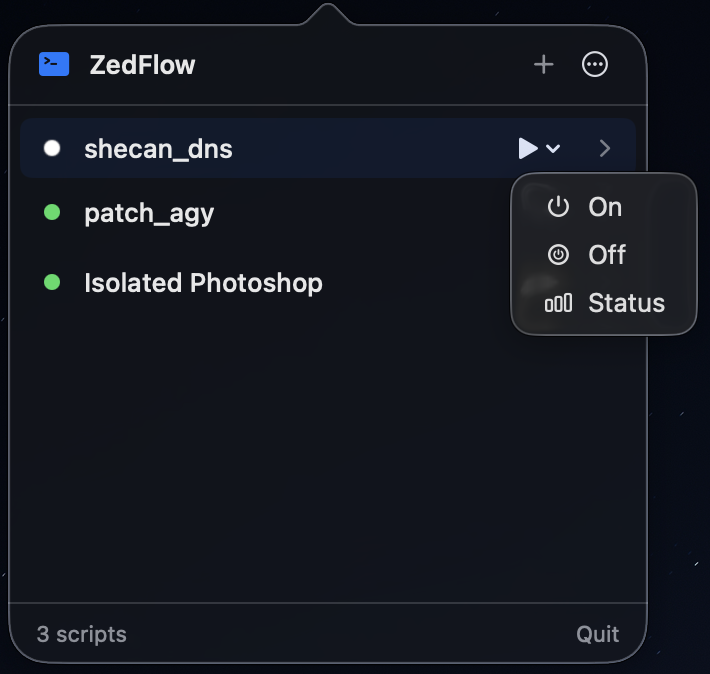

Bridge terminal automation with the macOS menu bar. Run, schedule, and monitor shell scripts, Python tools, and developer workflows with zero friction and headless IPC for AI agents.

Designed as a true native citizen of macOS Sonoma and Sequoia — ultra-fast, zero electron bloat, and rock solid.
Lives discreetly in your menu bar. No dock clutter, no heavy windows. Instant access to your proxy toggles, docker cleaners, and scrapers.
Attach multiple action verbs to any script (e.g. start, stop, status, prod) each with custom flags and SF Symbol icons.
Recursively walks the process tree via proc_listchildpids to terminate runaway processes and all descendant child workers without dangling leaks.
Automate recurring tasks on flexible intervals (1m to 24h) or exact daily times (e.g., 09:30). Built-in sleep/wake drift compensation prevents backlog stampedes.
zedflow)Full Unix Domain Socket control. Seamlessly integrates with Claude Code, Cursor, Raycast, Alfred, and shell scripts with structured --json output.
Resolves your actual interactive login shell environment: automatically loads Homebrew, nvm, pyenv, asdf, cargo, and custom PATH variables.
Scripts signal real-time status dynamically using stdout directives ([zedflow:status=active]) or standard LSB exit codes (0/2/3).
Full ANSI color decoding with a 60fps throttled UI buffer. Keeps persistent execution logs of up to 50 past executions per script.
Explore the interfaces designed to make script management feel like second nature.
Single-line compact script cards with dynamic status dots. When a script defines multiple action presets, an elegant minimal capsule dropdown lets you trigger specific subcommands with one click.
Everything configurable in the UI is 100% controllable via the zedflow CLI over Unix Domain Socket with structured --json output.
ZedFlow introduces a dead-simple status protocol. Any script can report its ongoing state using stdout directives or standard LSB exit codes without any SDK dependencies.
Exit code 0, or print anywhere in stdout:
echo "[zedflow:status=active]"
Exit code 2 or 3 (LSB off), or directive:
echo "[zedflow:status=clear]"
Any non-zero exit code (except 2/3), or directive:
echo "[zedflow:status=failed]"
Choose between pre-built universal binaries or building from source.
Download the signed application bundle and standalone CLI archive from GitHub Releases.
ZedFlow-v1.1.0-macOS-universal.zipZedFlow.app to /Applicationszedflow to ~/.local/bin/zedflowClone the repository and run the build script to compile with Swift 6 and install the app + CLI automatically:
>_ icon) in the top-right menu bar. It does not occupy a slot in the macOS Dock or App Switcher, keeping your workspace distraction-free.
$PATH, pyenv, nvm, cargo, rbenv, Homebrew). Your scripts execute with the exact same binary paths and environment variables as your terminal.
zedflow CLI provides full discovery and manipulation with a dedicated --json flag across all commands (e.g. zedflow list --json, zedflow add ..., zedflow run ...). AI agents can programmatically register, inspect, trigger, and verify automation without touching the UI.
proc_listchildpids. It recursively discovers all descendant child PIDs, issues SIGKILL to the process group and all sub-processes, and frees all file descriptor handles to ensure zero runaway background processes.